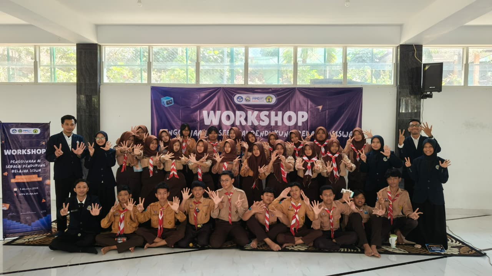
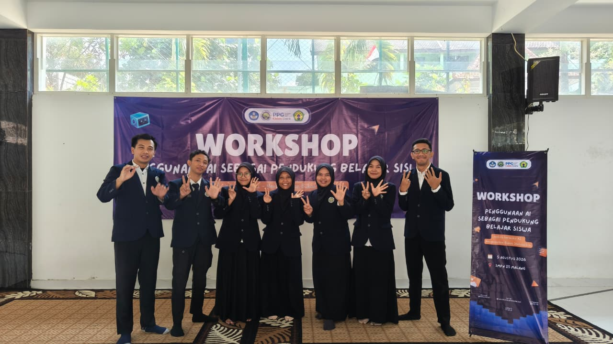
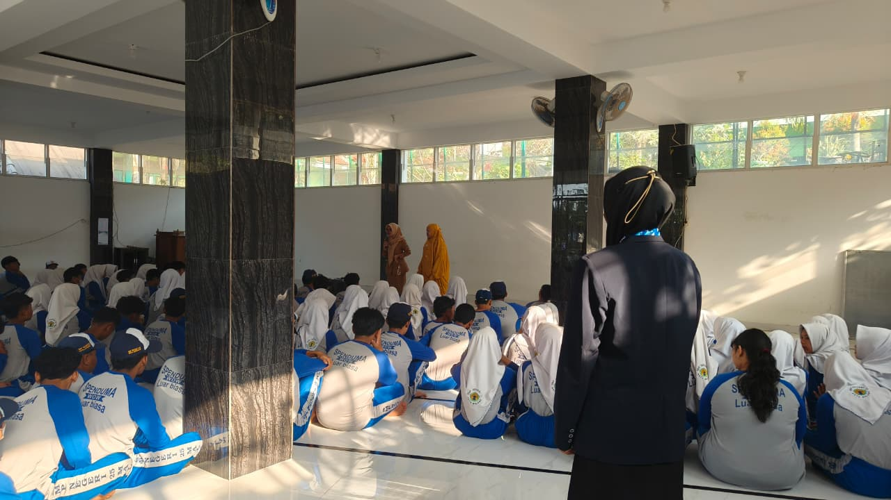
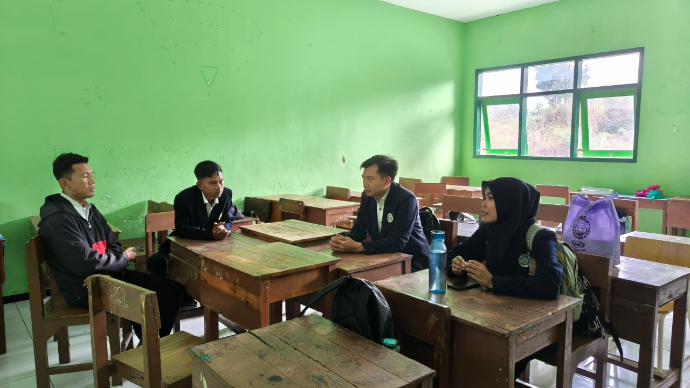
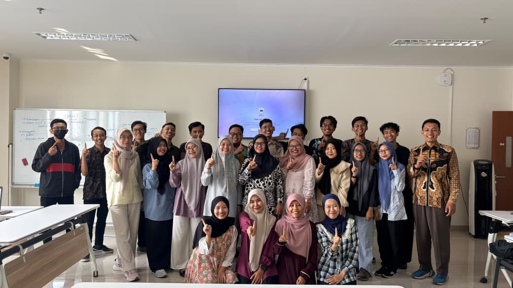
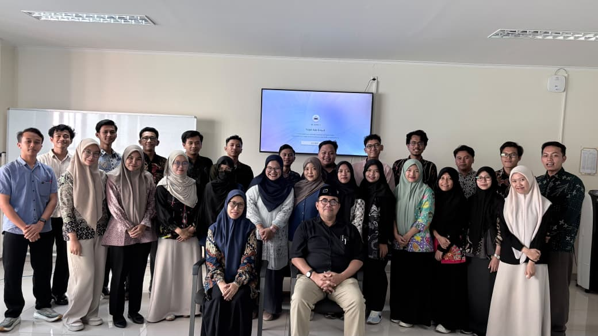

Asistensi Perangkat Ajar
Melakukan asistensi perangkat ajar bersama guru pamong sebelum pelaksanaan pembelajaran.
Pengalaman Semester 2
Jejak Karya dan Pengalaman Belajar
Semester 2 melanjutkan proses pembelajaran dengan materi yang lebih mendalam untuk memperkuat kompetensi sebagai calon guru. Pembelajaran mencakup pengembangan profesionalisme, asesmen, serta aspek sosial dan emosional dalam pendidikan. Setiap mata kuliah memperluas pemahaman yang telah diperoleh pada Semester 1 dan PPL Terbimbing. Pengalaman tersebut menjadi dasar untuk menjalankan praktik pembelajaran dengan tanggung jawab yang lebih besar melalui PPL Mandiri.
Menguatkan Kompetensi sebagai Guru
Mengelola Pembelajaran secara Mandiri
PPL Mandiri menjadi tahap penerapan pembelajaran dengan tingkat kemandirian yang lebih besar. Mahasiswa memperoleh ruang untuk mengelola kegiatan pembelajaran secara langsung dengan tetap mendapatkan arahan dari guru pamong. Kegiatan diawali melalui asistensi untuk membahas perangkat ajar yang akan digunakan dalam pembelajaran. Selama pelaksanaan di kelas, guru pamong tetap melakukan evaluasi melalui pengamatan dan refleksi bersama mahasiswa.
Melakukan asistensi perangkat ajar bersama guru pamong sebelum pelaksanaan pembelajaran.
Melaksanakan pembelajaran secara mandiri dengan tanggung jawab penuh di kelas.
Mendapatkan pengamatan dari observer atau teman sejawat untuk evaluasi pembelajaran.
Melakukan refleksi dan evaluasi bersama guru pamong untuk perbaikan ke depan.
Merekam Proses dan Karya Pembelajaran
Dokumentasi menjadi bagian yang melengkapi seluruh proses pembelajaran selama mengikuti Program PPG Calon Guru. Foto yang ditampilkan merekam kegiatan perkuliahan dan praktik pembelajaran di sekolah. Dokumentasi juga memperlihatkan proses kolaborasi serta kegiatan refleksi yang dilakukan selama program berlangsung. Kumpulan foto tersebut melengkapi karya dan refleksi sebagai gambaran dari proses yang telah dilalui.

Pelaksanaan Proyek Kepemimpinan
Dokumentasi Kelompok Proyek Kepemimpinan
Pendampingan Kegiatan Kokulikuler
Refleksi Kelompok
Guru Kolaborasi MK Etika dan Profesionalisme
Guru Kolaborasi MK PMA Lanjut